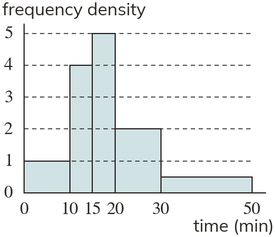

Westonbirt Maths · Histograms
Interpreting Histograms
Name: ______________________ Date: ____________
1
Use the histogram to estimate how many times lie between and minutes.

2
Using the histogram in question Raj counts the whole 10–15 bar for the times between and minutes. Find his mistake.
3
Using the histogram in question estimate how many times are more than minutes.
4
Using the histogram in question estimate how many times lie between and minutes.
5
Using the histogram in question estimate how many times are less than minutes.
Ext
Using the histogram in question estimate the time below which of the times lie.